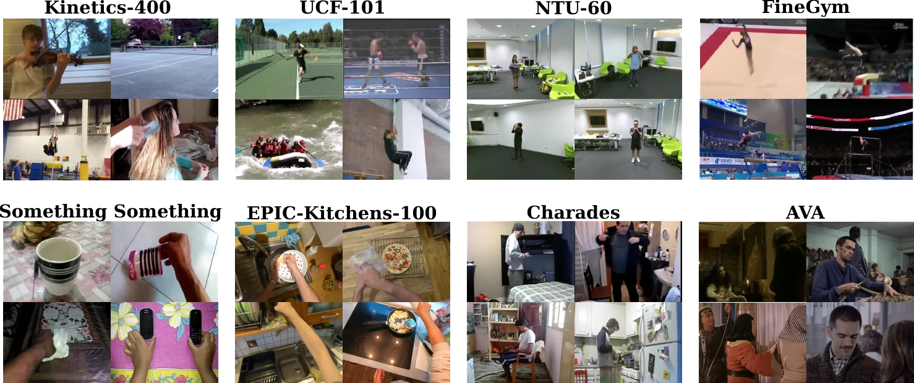

Video self-supervised models are almost always tested the same way: pre-train on Kinetics-400, finetune on something similar. The winner is called state of the art. But does winning there tell you how a model transfers?
In 2022 we showed that for 10 CNN methods, it doesn’t. Today’s models are transformers, so we asked again, of 22 models.
The leaderboard you know is not the one you get
Each line is a model, re-ranked on every dataset. If Kinetics-400 predicted transfer, the lines would stay flat.
Rank of each model, per dataset
Rank 1 is best. Hide families to re-rank within one.
Even within CNNs, the K400 rank says almost nothing about the EK-100 rank (Spearman ρ = +0.10).
Who we tested
10 CNNs, 7 video-only transformers and 5 video-text transformers, all public checkpoints, all evaluated with one downstream protocol.
This benchmarks off-the-shelf models; it is not a controlled study. Models differ in more than one way.
What changes downstream
How far from Kinetics?
Six datasets, from familiar (UCF-101) to far away (EPIC-Kitchens, FineGym, SS-v2).

Compare any two evaluations
Each dot is a model. Tap one to pin it.
Takeaway. Transformers handle domain shift better than CNNs. Video-text models, despite far more pre-training data, trail video-only ones on Gym-99, SS-v2 and EK-100.
Only 1,000 labelled clips?
Accuracy with 1,000 finetuning samples versus all of them.
Low-data versus full-data
Dashed lines are supervised pre-training.
Takeaway. With all the data, models look alike. With 1k samples they spread out and reshuffle. Supervised CNN pre-training is the one to beat, and CNNs often beat transformers.
Telling similar actions apart
FineGym subsets, from coarse to near-identical classes.
Six granularities
Each row has its own axis, worst to best. Hover a model to follow it.
Takeaway. Rankings change between subsets. The best CNNs beat the best video-only transformers on almost every one. Invariance to time reversal (GDT) hurts on UB-S1.
Beyond classification
Detection, counting, arrow of time and localization. The last three rows leave the Kinetics domain.
Seven task settings
Repetition counting is an error, so its axis is flipped. Cross-family gaps are indicative only.
Takeaway. Recognition accuracy says little about counting or localization. Video-only transformers are the most consistent; video-text models win only on multi-label recognition (UMT).
Does Kinetics-400 predict anything?
Rank correlation (Spearman ρ) between each model’s K400 accuracy and its score on each setting.
Correlation with Kinetics-400 finetuning
Ringed dot: all 22 models. Coloured dots: per family (only 5 video-text models).
Pooled, K400 predicts UCF-101, SS-v2 and EK-100 (ρ ≥ 0.78), mostly because transformers beat CNNs on all three. On Gym-99 and every action subset it is anti-correlated (ρ ≈ −0.5). Within CNNs, it fades with domain distance: +0.78 on UCF-101, +0.10 on EK-100.
Who wins where
Best model of each family, per benchmark column
No family wins every row.
Takeaways
- No clear winner.Nothing is best across the board.
- Transformers aren’t best everywhere.More robust to domain and task shift; behind CNNs on fine-grained actions and low data.
- Video-only matches video-text.240K Kinetics videos do as well as millions of pairs.
- Supervised still matters for CNNs.Especially with few samples, or when domain and task both change.
- Some invariances hurt.Time-reversal invariance (GDT) fails on direction-dependent actions.
- Motion helps.Synthetic motion makes CtP and Tubelet-Contrast the best CNNs.
- Reconstruct semantics, not pixels.Masked models predicting HOG (MME) or DINO features (SIGMA) generalise best.
SEVERE-benchmark++
Running 1,100 experiments is a lot. So we distilled them into eight evaluations, two per factor, plus K400 for reference.
- Domain: SS-v2, FineGym-99
- Samples: 1k samples of UCF-101, FineGym-99
- Actions: FX-S1, UB-S1
- Tasks: repetition counting, Charades multi-label
Click a column to sort. Stronger shading is a better rank. “Mean rank” is this page’s summary, not the paper’s.
Ranks among all 24 rows. MGM has no 1k-sample results, so no mean rank.
Code: SEVERE-BENCHMARK-plus-plus (being updated).
Limitations
Pre-training is fixed to Kinetics-400 for CNNs and video-only models; video-text models use their own data. Only R(2+1)D-18 and ViT-B backbones. Tasks are human-action-centric and encoder-only, so video question answering is out of scope.
BibTeX
@article{thoker2026severepp,
title = {{SEVERE++}: Evaluating Benchmark Sensitivity in Generalization of Video Representation Learning},
author = {Thoker, Fida Mohammad and Jiang, Letian and Zhao, Chen and Bagad, Piyush and Doughty, Hazel and Ghanem, Bernard and Snoek, Cees G. M.},
journal = {International Journal of Computer Vision},
year = {2026}
}
@inproceedings{thoker2022severe,
title = {How Severe is Benchmark-Sensitivity in Video Self-Supervised Learning?},
author = {Thoker, Fida Mohammad and Doughty, Hazel and Bagad, Piyush and Snoek, Cees G. M.},
booktitle = {European Conference on Computer Vision (ECCV)},
year = {2022}
}